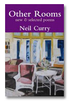

The poet Neil Curry was born in Newcastle upon Tyne, and now lives in Ulverston in the English Lake District. He read English at Bristol University, then taught at the University of Guelph in Canada and subsequently at secondary schools in England. His verse translations of Euripides, published by Methuen and Cambridge University Press, and in the USA by Doubleday, have been performed in many countries. His poems have appeared in many pamphlets and magazines, and have won several national prizes.
Podcast:
Neil Curry reading a selection of his poems in San Francisco (August '07).
Neil Curry reading from The Cumberland Coast (June '08).
Newly Published:

Other Rooms
new and selected poems
The Well
Though he leant right out over the rim,
The water was too far down for him to see.
“Time, you realise,” someone remarked
Inside his head, “is only the rate
At which the past decays.” And so,
He let slip slowly through his fingers
The one or two choice memories he chanced
To have about him, then stood listening
Attentively for their depleted echo.
Neil Curry